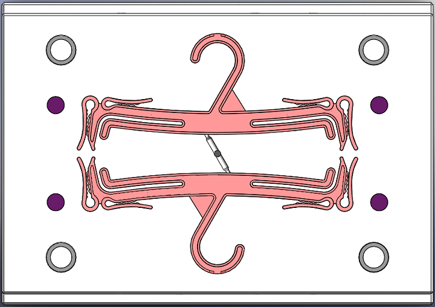
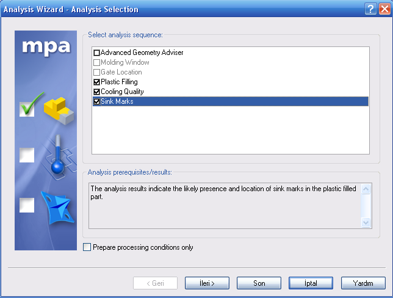
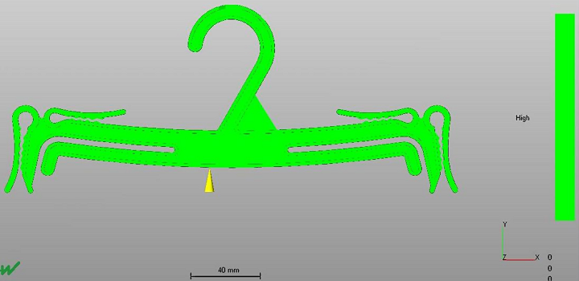
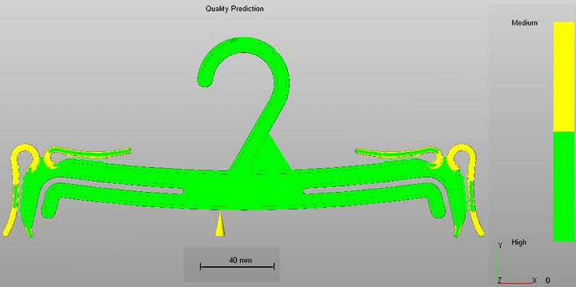
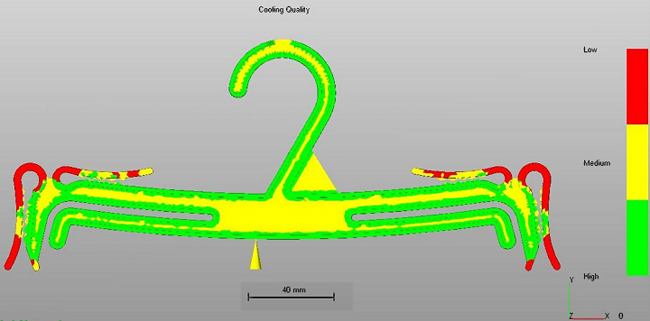
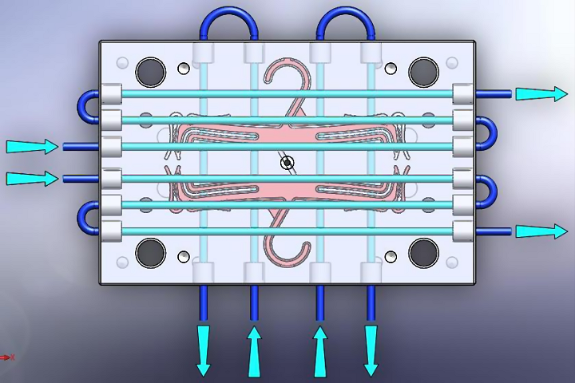
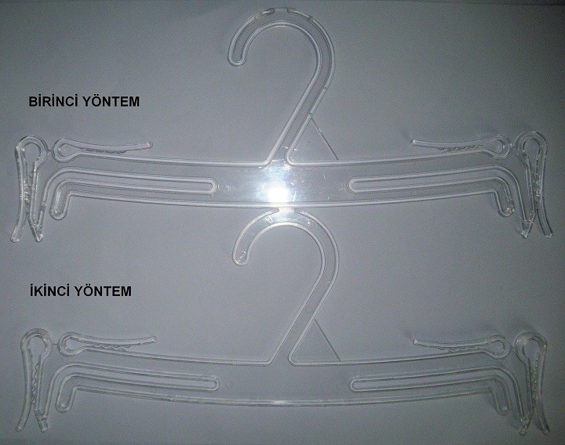
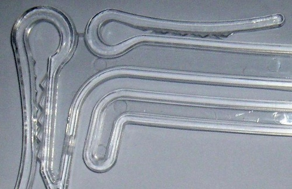
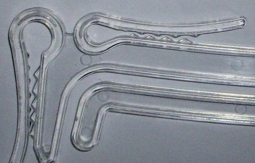

|
Birinci Neden; Ýkinci Neden ve Üçüncü Nedende ulaþýlan bilgilere göre, Giriþ noktasýnýn Þekil 8’ deki gibi olmasýný karar verdikten sonra diðer analizler yapýlýr.
Analizi üç genel kritere göre yapabiliriz:
1.Plastik Dolum Analizi (Plastic Filling),
2.Soðuma Kalitesi Analizi (Cooling Quality)
3.Çökme Analizi (Sink Marks).

Þekil 8. Yolluk Giriþ Noktasý

Þekil 9. Yapýlmasý Ýstenen Analizler
Bu analiz baþlýklarýný seçerek yapýlan analizde elde edilen sonuçlar þunlardýr:
1.Dolum Güvenilirliði Analizi (Confidence of Fill): Burada her yer yeþil, yani kalýbýn en ince ayrýntýsýna kadar dolduðunu gösteriyor.

Þekil 10. Dolum Güvenilirliði Analizi (Confidence of Fill)
2. Tahmini Kalite Analizi (Quality Prediction): Burada baskýdan sonra parçanýn yüzey kalitesi ile ilgili bilgileri alýyoruz. Þekil 11 de yeþil renk yüksek kalite, sarý orta kalite ve eðer kýrmýzý olsaydý kýrmýzý bölgelerde de kalitesizlik oluþacaðýný gösterirdi. Sarý bölgeleri sadece göstermekte kalmýyor bunlarýn neden oluþtuðunun bilgisini veriyor. Parça üzerindeki sarý bölgeye týkladýðýmýz zaman o bölgenin özellikli deðerlerine ulaþabiliyoruz. Onlar da parçadaki sadece o bölgenin sýcaklýðý, basýnç düþüþü, dolum süresi, soðuma süresi ve diðer bilgiler. En önemlisi de orta kalitenin neden oluþtuðunu ek bilgi olarak alabiliriz. Örneðin Þekil 11 de gösterilen sarý yerler için, soðuma zamaný çok uzun, bu ilerde ütülemede problem yaratabilir bilgisini kýsa öneri olarak veriyor. Ayrýca daha detaylý bilgi almak istediðimizde, bu sonucun neden oluþtuðunu, nelerin buna sebep olduðunu ve ileride ne yapýlmasý gerektiðini bilgi olarak alabiliriz.
Programýn verdiði üç öneri þunlardýr:
- Eriyik sýcaklýðýný düþür;
- Kalýp sýcaklýðýný düþür;
- Problemli bölgenin et kalýnlýðýný incelt.

Þekil 11. Tahmini Kalite Analizi (Quality Prediction)
Bu üç öneriden:
A) Eriyik sýcaklýðýný düþürmek, enjeksiyon için malzemenin olmasý gereken enjeksiyon sýcaklýðýnýn altýna düþülemeyeceðinden bu öneri uygulanamaz.
C) Problemli bölgenin et kalýnlýðýný inceltmek, parçada boyutsal deðiþim olmasý istenmemesi gereðince bu öneri de uygulanamaz.
B) Kalýp sýcaklýðýný düþürmek ise yapýlabilecek en uygun çözüm olur. Kalýp sýcaklýðýný düþürmek için tasarýmda su kanalýnýn yerinin nerden geçeceðini tayin etmek gerekir.
Su kanalýnýn yerini tayin etmek, parçanýn soðumak için en uzun süreye ihtiyaç olduðu parça kesitinin fazlalaþtýðý yerlerin nasýl davranýþ göstereceðini de dikkate alarak tasarlanmasý gerekir. Bu aþamada Tahmini Kalite Analizi ile birlikte Soðuma Kalitesi (Cooling Quality) Analizinden de faydalanýyoruz. Tahmini kalite analizinde gösterilen sarý yerler, soðuma zamaný çok uzun, bu ilerde ütülmede problem yaratabilir þeklindeydi. Soðuma kalitesi analizinde de elde ettiðimiz veriler devamdaki alt konu baþlýðýndadýr.
3. Soðuma Kalitesi (Cooling Quality): Resimde kýrmýzý ile gösterilen bölgeler soðuma kanallarýnýn olmasý gereken yerleri hakkýnda bilgi vermektedir.

Þekil 12. Soðuma Kalitesi (Cooling Quality)
Soðuma zamaný çok uzun olan yerin soðutmasýný iyi yaparak yani su kanalýný o bölgeden yakýn geçirerek bu olumsuzluðu gidermiþ oluruz. Kalýpta su kanalýný Tahmini Kalite ve Soðuma Kalitesi analizlerini dikkate alarak aþaðýda görüldüðü gibi üst çelikten yatay altý adet ve parçada soðuma kalitesinin en kötü olduðu yerden geçirerek, alt çelikten de dört adet ve itici pimlerin arasýndan geçirebileceðimiz en uygun yerden geçirerek Þekil 13 teki gibi tasarladýk.

Þekil 13. Su Kanalý Tasarýmý
Programýn vermiþ olduðu Kalýp sýcaklýðýný düþür önerisini kýyaslayabilmek için, kalýba enjeksiyon iþlemi iki farklý yöntemle yapýlmýþtýr.
Birinci yöntemde kalýp soðutmasý yapýlarak parça basýlmýþtýr. Ýkinci yöntemde ise kalýp soðutmasý yapýlmayarak yani su kanalýna soðutma suyu gönderilmeyerek parça basýlmýþtýr. Ýki yöntemle de elde edilen ürünler Þekil 14’te gösterilmiþtir.

Þekil 14. Kalýp Soðutmasý Yapýlarak ve Yapýlmadan Üretilen Parça
Parçanýn fonksiyonu gereðince, diþlerin olduðu yerlerde yaylanma özelliðinden yararlanýlmasý gerekir. Birinci yöntemde kalýp soðutmasý yapýldýðý için parçanýn ütülenme devresi iyi gerçekleþmiþ ve kalýptan çýktýktan sonra yaylanma fonksiyonunu yerine getirmek üzere diþler birbirinin içine geçerek sýkma kuvveti oluþturmuþtur. Ýkinci yöntemde ise su kanalýna soðutma suyu gönderilmeden enjeksiyon yapýlmýþ ve birinci yöntemle ayný çevrim süresinde parça kalýptan çýkartýlmýþtýr. Kalýp soðutulmasý yapýlmadýðý için ütülenme devresi tam gerçekleþmeden parça kalýptan çýkartýlmýþ ve ütülenme devresinde parçadan alýnmasý gereken ýsý miktarý kalýp içinde deðil atmosfer ortamýnda parçayý terk etmiþtir. Bu yüzden yaylanma özelliðine sahip olmasý gereken kollar geniþlemiþ halde soðumuþ ve yaylanma fonksiyonunu alamamýþlardýr. Ýki parça arasýndaki farký resme yakýndan bakarak görebiliriz.

Þekil 15. Birinci Yöntemde Yaylanma Özelliði

Þekil 16. Ýkinci Yöntemde Yaylanma Özelliði |
|